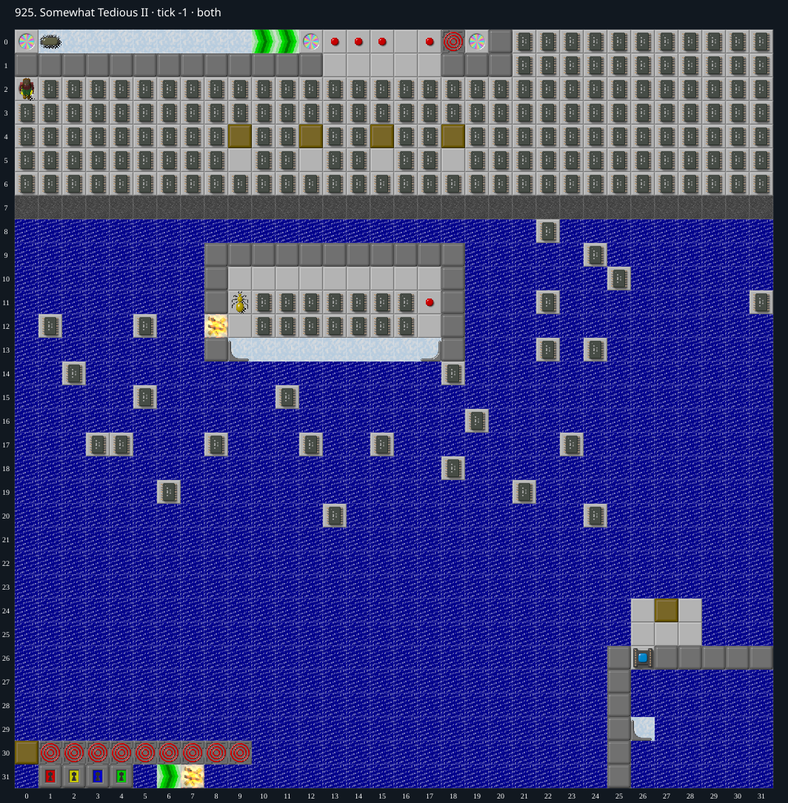

Jacques · Original Tile World MS
925. Somewhat Tedious II
Impossibility argumentThe sole exit is buried under water behind a permanent block-delivery obstruction. Swimming destroys the buried exit instead of opening it.
999 chips required · No time limit
Why completion is impossible
- The only Exit is at (0,31), beneath Water. Its north neighbor (0,30) is a south-facing directional Block over a Clone Machine; no cloner connection targets that cell. The remainder of the north barrier, (1..9,30), consists of bare Clone Machines. The board boundary closes the west and south sides.
- The unwired directional block cannot leave its cloner autonomously. Chip cannot manually push it: floorat resolves its underlying Clone Machine, whose entry rule rejects Chip. Neither blocks nor monsters can enter a Clone Machine and dislodge it. Thus every external block approaching the exit must travel west along row 31.
- Every such westward route crosses the east force floor at (6,31). A block first entering from (7,31) immediately acquires eastward slipping state. pushblock rejects both pushes parallel to and opposite its slip direction before moving the block or clearing that state. Therefore another west push cannot advance it to (5,31), regardless of input timing.
- Blocking the forced return east does not help: a failed forced move restarts floor movement using the same east force direction. A failed perpendicular manual push could clear slipping, but its required stance is either (6,30), an impassable Clone Machine, or (6,32), outside the board. There is no local teleport to supply the special teleport-push exception.
- Mutant blocks do not bypass this cut. They display Chip and cannot be manually pushed. Fire at (7,31) ends forced movement, so a mutant from elsewhere cannot travel west across that ordinary-floor approach. Creating an overlap locally requires a block to enter Chip on the force-floor corridor, which is a losing collision; the special cloner-squish exception applies only when a block leaves a Clone Machine. No cloner is adjacent to the force-floor cell in a traversable direction.
- Consequently no block can reach Water (5,31), much less the Water covering Exit (0,31). Only a block converts Water to Dirt while preserving its lower tile. Swimming does not uncover the Exit: the Water arrival action does not pop the tile, and adding Chip to the map replaces the lower Exit with Water before the completion check. Other monsters either die in Water without uncovering it, or, for a glider, overwrite the buried Exit in the same way. Therefore no play can complete the level, even after collecting all 999 required chips.
Inspect both layers
The main map shows the initial runtime state. Switch to the buried layer to inspect hidden terrain and items. Hover coordinates are also available in the downloadable SVG.


Recorded checks and attempts
- independent source and visual review: Inspected the exact exit corridor and both layers, cloner wiring, original C push rejection ordering, failed forced-movement restart, perpendicular cancellation, teleport exception, mutant blocks, and Water-over-Exit completion semantics.
- constructive countercheck: An unchanged-level replay collects all 999 required chips by tick 141295. The original C engine independently reaches the same playing endpoint, Chip (10,11), with zero required chips remaining. The exact TWS bytes are preserved as 925-all-chips-not-winning.tws; this is not a winning replay and is not needed for the exit proof.
Evidence
- Structured report
- 925-all-chips-not-winning.json
- 925-all-chips-not-winning.tws
- 925-all-chips.svg
- 925-exit.svg
- legacy_c/mslogic.c:491-497 (pushtile overwrites the lower plane)
- legacy_c/mslogic.c:646-652 (adding an actor uses pushtile)
- legacy_c/mslogic.c:723-750 (force-floor arrival gives blocks the floor direction)
- legacy_c/mslogic.c:871-872 (Clone Machine entry masks)
- legacy_c/mslogic.c:961-968 (parallel and opposite slipping-block pushes rejected)
- legacy_c/mslogic.c:978-985 (only failed attempted block movement cancels slipping)
- legacy_c/mslogic.c:1034-1050 (floor-based entry and creature occupancy)
- legacy_c/mslogic.c:1104-1105 (underlying cloner rejects entry)
- legacy_c/mslogic.c:1619-1622 (Water arrival does not pop its lower tile)
- legacy_c/mslogic.c:1693-1696 (block fills Water with Dirt)
- legacy_c/mslogic.c:1769 (actor added before completion test)
- legacy_c/mslogic.c:1829-1831 (completion requires bottom Exit)
- legacy_c/mslogic.c:1833-1840 (block collision and cloner-only squish exception)
- legacy_c/mslogic.c:1847-1865 (forced movement ends on ordinary floor)
- legacy_c/mslogic.c:1988-2004 (blocked forced movement restarts the same force direction)